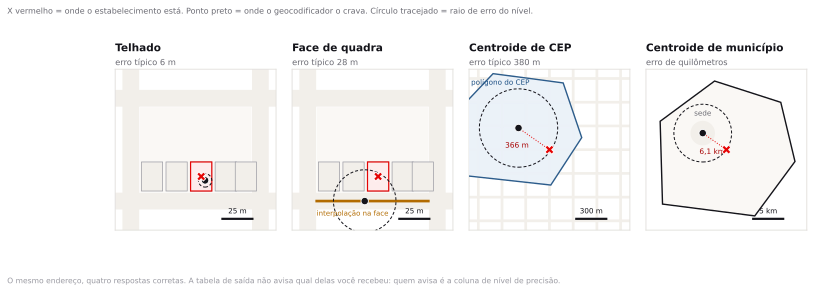
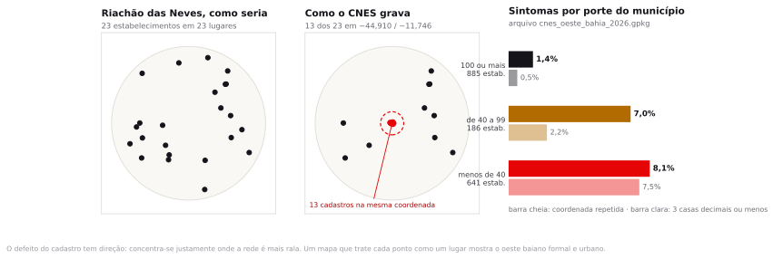
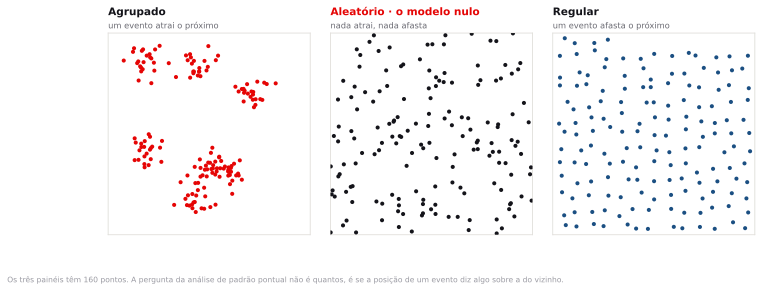
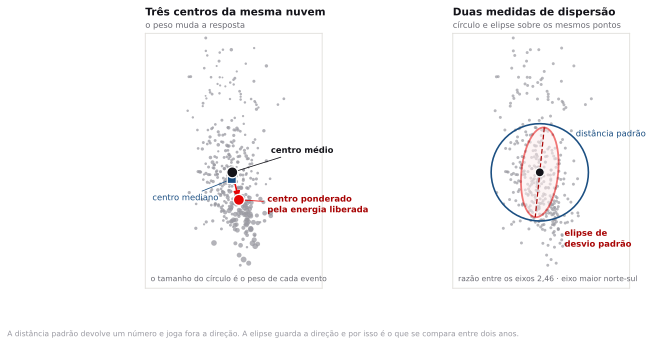
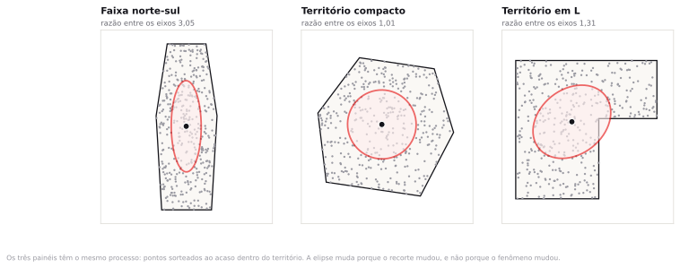

Preparação e dados
A leitura do tema era a nota metodológica do INPE sobre o satélite de referência do Programa Queimadas. São quatro páginas. Se você não leu, leia enquanto a turma se organiza: metade do roteiro de hoje depende de entender por que existe um satélite de referência.
- focos_oeste_bahia_2023_2024.gpkg 212.160 focos de calor no Cerrado do oeste da Bahia, junho a novembro de 2023 e de 2024, dezesseis satélites, com potência radiativa, dias sem chuva e risco de fogo. Ponto, EPSG:4674. Dos arquivos anuaisoficial
focos_br_todos-sats_2023e2024do INPE. - cnes_oeste_bahia_2026.gpkg 1.712 estabelecimentos de saúde ativos em 36 municípios do oeste baiano, com a latitude e a longitude do próprio cadastro. Ponto, EPSG:4674. Da competência 06/2026 da base do CNES.oficial
- LEIA-ME.txt Origem, campos, recorte e a lista completa dos números conferidos.
dados/semana07/_numeros_oficiais.json.Uma secretaria estadual manda a você uma planilha com 1.712 endereços de estabelecimentos de saúde e pede um mapa que mostre onde a rede está concentrada. Você geocodifica, plota e a mancha aparece. Quanto dessa mancha é a rede, e quanto é o geocodificador?
Processo pontual e centrografia
Uma lista de endereços é um texto; o mapa de pontos que sai dela é uma geometria. A conversão entre os dois é feita por um procedimento que erra, e erra de maneira previsível. Metade desta aula é sobre esse procedimento; a outra metade é sobre o que fazer com a nuvem de pontos depois que ela existe.
Você chega aqui sabendo cruzar tabelas, medir área e desconfiar de uma classificação. O que ainda falta é um método para descrever uma nuvem de pontos sem apelar para o olho. Dois mil focos de fogo espalhados entre Barreiras e Formosa do Rio Preto parecem muitas coisas dependendo de quem olha o mapa. A centrografia transforma esse "parece" em quatro ou cinco números que outra pessoa pode conferir.
Geocodificação é um procedimento estatístico
Geocodificar é converter uma cadeia de texto em um par de coordenadas. A cadeia é algo como "Av. Getúlio Vargas, 1250, Centro, Bom Jesus, PI". A saída é um ponto. Entre a entrada e a saída existe um casamento aproximado contra uma base de referência, e esse casamento tem qualidade variável.
O erro mais comum de quem começa é tratar o resultado como uma operação exata, do tipo que converte metro em pé. Trata-se, na verdade, de uma inferência, com margem de erro conhecida, e a margem depende do nível em que o casamento foi possível.

Nível de precisão da geocodificação
É a informação que diz qual foi o objeto usado para atribuir a coordenada. Do mais preciso para o menos: o telhado ou o centroide do lote, quando a base de referência tem o imóvel; a interpolação na face de quadra, que estima a posição do número dentro do trecho de rua; o centroide do CEP; e o centroide do município. Toda API de geocodificação séria devolve esse campo. Quem descarta essa coluna perde a única informação que permite auditar o mapa depois.
A interpolação na face de quadra merece um parágrafo, porque é o nível mais frequente em cidade brasileira média e o menos compreendido. O geocodificador sabe que a Rua X, no trecho entre a Rua A e a Rua B, contém os números de 100 a 298. Recebe o número 172 e supõe que os números estão distribuídos de forma uniforme ao longo do trecho. Coloca o ponto em 36% do comprimento, contando do início. Se o quarteirão tem um terreno baldio de cem metros no meio, a suposição falha e o ponto cai na casa errada. Erro típico de algumas dezenas de metros, o suficiente para trocar o setor censitário em área urbana densa.
Se o erro de geocodificação é de trinta metros, ele importa para qual análise?
Depende do tamanho da unidade de análise. Para somar estabelecimentos por município, trinta metros nunca muda nada. Para contar por setor censitário, muda em toda quadra de borda. Para medir distância até a UBS mais próxima, muda pouco. Para dizer se o ponto está dentro ou fora de um raio de 300 metros de uma estação, muda em todo caso que cai perto da borda do raio. A regra prática: o erro posicional importa quando é da mesma ordem de grandeza da menor feição da análise.
Taxa de match, e o que ela esconde
A taxa de match é a proporção de endereços da lista que o geocodificador conseguiu resolver. É o primeiro número que o fornecedor apresenta e costuma ser o único. Uma taxa de 96% soa excelente para quem nunca fez a conta seguinte.
O problema é que "match" não é um estado binário. Um serviço pode declarar 96% de match e ter resolvido metade dos casos no centroide do município. Do ponto de vista do relatório, foram 96%. Do ponto de vista do mapa, metade dos pontos está empilhada sobre um punhado de praças de matriz.
O CNES não publica o nível de precisão de cada coordenada, e é justamente por isso que ele serve de exemplo. Você não tem a coluna que auditaria o cadastro, então precisa procurar o sintoma. Há dois sintomas observáveis no arquivo desta aula, e os dois se medem com uma expressão de campo.
| Sintoma | Registros | Participação | O que ele denuncia |
|---|---|---|---|
| Coordenada com 6 ou mais casas decimais | 1.539 | 89,9% | Posição tomada em campo ou sobre imagem, erro de metros |
| Coordenada com 4 ou 5 casas | 117 | 6,8% | Arredondamento de dezenas de metros |
| Coordenada com 3 casas ou menos | 56 | 3,3% | Grade de 110 m ou mais grosseira, típica de digitação manual |
| Coordenada repetida por dois ou mais cadastros | 77 | 4,5% | Ponto herdado de outro registro ou da sede do município |
Três casas decimais de grau valem cerca de 110 metros de lado em latitude. Duas casas valem 1,1 quilômetro. Quando 13 unidades básicas de saúde de Riachão das Neves aparecem todas em −44,910 / −11,746, com três casas decimais e bairro registrado como zona rural, ninguém foi a campo com GPS. Alguém digitou o ponto da sede e replicou.
Rodar um mapa de calor sobre uma camada que contém pontos empilhados. Os 77 registros viram 25 picos de densidade desproporcionais, e dois deles, com 13 e 12 unidades, ficam mais altos que Barreiras inteira, que tem 335 estabelecimentos espalhados. O mapa passa a mostrar a geografia do cadastro em vez da geografia da rede de saúde. Antes de qualquer análise de densidade, conte as coordenadas repetidas e declare quantas são.
O viés do não-match
Aqui está o ponto de que o resto da aula depende. Endereços que falham na geocodificação não falham ao acaso: a falha se concentra onde o logradouro não tem nome oficial ou onde a base de referência está desatualizada, ou seja, em ocupação informal e em município pequeno.
O CNES não deixa medir não-match, porque só entram no cadastro os estabelecimentos que receberam coordenada. Dá para medir o parente próximo, que é a qualidade da coordenada atribuída, e o mecanismo é o mesmo: falta de base de referência boa no município. Separe os 36 municípios por porte, contando estabelecimentos cadastrados, e olhe a proporção de pontos empilhados em cada grupo.
| Porte | Municípios | Estabelecimentos | Em coordenada repetida | Com 3 casas ou menos |
|---|---|---|---|---|
| 100 ou mais estabelecimentos | 4 | 885 | 1,4% | 0,5% |
| de 40 a 99 | 3 | 186 | 7,0% | 2,2% |
| menos de 40 | 29 | 641 | 8,1% | 7,5% |

Se você tratar cada ponto como uma posição real, como faz quase todo mundo, o mapa mostra uma rede de saúde concentrada em Barreiras e em Luís Eduardo Magalhães. A rede é concentrada, de fato: os quatro municípios grandes têm 52% dos estabelecimentos e menos de um sexto dos municípios. Mas não tanto quanto o mapa afirma, porque a rede difusa dos 29 municípios pequenos aparece colapsada em pilhas sobre as sedes. Parte da concentração é do fenômeno e parte é do procedimento, e o mapa não distingue as duas.
A consequência é direta. Uma política de expansão de atenção básica desenhada sobre esse mapa tende a reforçar os municípios grandes, porque é neles que o cadastro é bom, e a subestimar a demanda dos 29 pequenos, exatamente onde a rede é mais rala e o cadastro pior.
Você entrega o mapa sabendo que 4,5% dos pontos estão empilhados, ou espera até resolver o resto?
Entrega, porque o resto não se resolve em prazo de consultoria. O que muda é o que vai junto: a contagem de coordenadas repetidas por município, a lista dos municípios em que a pilha passa de metade da rede e uma frase dizendo que a comparação entre municípios de portes diferentes não é válida sem correção. Um mapa com limite declarado é utilizável; apresentar as 13 unidades empilhadas como se fossem 13 lugares distintos, sem aviso, é afirmar uma coisa que você já sabe estar errada.
O CNEFE e o limite jurídico do ponto
Até 2022, quem geocodificava endereço brasileiro dependia de serviço comercial estrangeiro, com cobertura desigual e sem transparência sobre o método. O Censo 2022 mudou isso. O CNEFE, Cadastro Nacional de Endereços para Fins Estatísticos, foi publicado com cerca de 106 milhões de endereços, cada um com latitude e longitude coletadas pelo recenseador no dispositivo móvel, em campo.
É a maior base de referência de endereços já publicada no país, gratuita e auditável. Não resolve tudo: a coleta é do momento do Censo, endereço novo não está lá, e a estrutura de texto exige tratamento antes de servir de base para casamento. Mas muda o patamar do que se pode exigir de um trabalho de geocodificação feito no Brasil a partir de agora.
Quando o ponto deixa de ser dado e passa a ser pessoa
A LGPD, Lei 13.709/2018, define dado pessoal como informação relacionada a pessoa natural identificada ou identificável. A coordenada de uma residência, sozinha, costuma bastar para identificar quem mora nela. Um ponto de estabelecimento de saúde não é dado pessoal. Um ponto de residência de paciente é, e quando o dado descreve condição de saúde ele é dado pessoal sensível, com regime mais restrito. Agregar por setor censitário ou por hexágono é o que separa uma análise publicável de um vazamento.
Publicar o mapa de pontos "só para a equipe interna" e depois exportar a figura para o relatório final. Um scatter de residências em escala de bairro permite reidentificação por qualquer pessoa que conheça a rua. O deslocamento aleatório dos pontos também não resolve sozinho, porque a mediana do deslocamento continua indicando a posição verdadeira quando há repetição de casos.
Evento, localização e o modelo nulo
A partir daqui a lista já virou nuvem de pontos e a pergunta muda. Em análise de padrão pontual, chamamos de evento a ocorrência efetiva registrada, e de localização qualquer posição do território onde o evento poderia ter acontecido. A distinção parece escolástica e não é: a pergunta da análise é sempre se os eventos observados se distribuem como se tivessem sido sorteados entre todas as localizações possíveis.
Esse sorteio tem nome. A aleatoriedade espacial completa, ou CSR na sigla em inglês, é o modelo nulo da área. Ela afirma duas coisas: que a chance de um evento cair em uma região depende só do tamanho da região, e que a posição de um evento não altera a chance de outro cair perto. Um processo de Poisson homogêneo.

Ninguém acredita que fogo no Cerrado siga CSR. O modelo nulo é uma régua, e ninguém precisa acreditar nele para usá-lo. Serve para dizer o quanto o padrão observado se afasta do que o acaso produziria, e para que esse "quanto" seja um número comparável entre dois recortes. No tema 8 você vai medir esse afastamento com dois testes. Hoje o objetivo é mais modesto: descrever a nuvem.
Centro médio, mediano e ponderado
A centrografia é a estatística descritiva do ponto. Média, mediana e desvio padrão, transportados para duas dimensões. O nome é antigo, do começo do século XX, e os cálculos são simples o bastante para caber em uma planilha. A dificuldade está em escolher qual usar.
Centro médio
É o ponto cujas coordenadas são a média aritmética das coordenadas dos eventos. Tem a mesma propriedade da média em uma dimensão: minimiza a soma dos quadrados das distâncias e é sensível a valor extremo. Um foco de fogo isolado a 400 quilômetros do restante puxa o centro médio na direção dele.
Centro mediano
É o ponto que minimiza a soma das distâncias, sem elevar ao quadrado. Resiste a valor extremo do mesmo jeito que a mediana resiste em uma dimensão. Não tem fórmula fechada: calcula-se por iteração. Alguns programas chamam de centro mediano a mediana separada de cada coordenada, que é outra coisa e não coincide com esta.
Centro médio ponderado
É a média das coordenadas com peso. O peso muda a pergunta: sem peso, cada foco de fogo conta igual e o centro responde onde o fogo acontece; com peso pela potência radiativa, cada foco conta pelo tanto de energia que liberou e o centro responde onde o fogo queima forte. São perguntas diferentes e as respostas podem ficar dezenas de quilômetros distantes uma da outra.

O centro médio de uma nuvem de pontos precisa cair sobre algum ponto observado?
Não, e em geral não cai. O centro médio dos focos do satélite de referência no Cerrado baiano em 2024 cai em Riachão das Neves, a 3,2 km do foco mais próximo, sobre uma área que não queimou. Em 2023 ele cai em Angical, 22,9 km a leste-nordeste. Ele é uma síntese estatística, não um lugar. Confundir as duas coisas produz frases como "o epicentro das queimadas é Riachão das Neves", que é um erro de interpretação, não de cálculo.
Dispersão: círculo, elipse e envoltória
A distância padrão é a raiz da média dos quadrados das distâncias de cada evento ao centro médio. É o desvio padrão em duas dimensões, sai em metros e desenha um círculo. Um único número, fácil de comparar entre dois anos, que joga fora toda a informação de direção.
A elipse de desvio padrão guarda a direção. Ela ajusta os dois eixos que melhor descrevem o espalhamento e devolve três quantidades: o comprimento do eixo maior, o comprimento do eixo menor e o azimute do eixo maior. A razão entre os eixos diz o quanto o padrão é alongado; o azimute diz para onde.
A forma do território contamina a forma da elipse. Se o recorte de análise é uma faixa estreita norte-sul, qualquer conjunto de pontos dentro dela produz uma elipse alongada norte-sul, inclusive um conjunto sorteado ao acaso. Ler uma elipse isolada e concluir que "o fenômeno tem orientação norte-sul" é confundir o dado com a moldura.

Daí a regra que vale levar para o resto do curso: compare duas elipses calculadas no mesmo recorte, em vez de interpretar uma sozinha. A elipse de 2023 contra a de 2024, no mesmo bioma, com o mesmo satélite, diz alguma coisa. A elipse de 2024 sozinha diz principalmente a forma do recorte.
Há um caso em que nem a comparação salva, e você vai encontrá-lo no passo 7. Quando a nuvem é quase redonda, o eixo maior deixa de ter significado: pequenas variações na amostra giram a elipse inteira. O sinal de alerta é a razão entre os eixos. Perto de 1, o azimute é ruído com aparência de resultado, e reportá-lo é pior do que omitir, porque um número de uma casa decimal convida à interpretação.
Faltam duas medidas de extensão, mais simples. O retângulo envolvente, ou bounding box, é o menor retângulo alinhado aos eixos que contém todos os pontos. É barato de calcular, serve de índice espacial e superestima muito a área ocupada. A envoltória convexa é o menor polígono convexo que contém todos os pontos, como um elástico esticado em volta da nuvem. Aproxima melhor, e a razão entre as duas áreas é um indicador útil de o quanto a nuvem é irregular.
A prova pode apresentar um mapa de pontos geocodificados com a taxa de match declarada e pedir que você diga qual conclusão o mapa sustenta e qual não sustenta. Pode também dar duas elipses de desvio padrão do mesmo fenômeno em dois períodos e pedir a leitura da mudança, com a advertência sobre o efeito do recorte. Saber calcular à mão não é cobrado; saber dizer o que cada medida responde e o que ela ignora é.
Centrografia dos focos de fogo no Cerrado baiano
Todos os valores abaixo saem do arquivo que você baixou. Se o seu QGIS mostrar outro número, algum passo saiu diferente, e vale parar para descobrir qual.
Abrir o projeto e carregar os focos
- Crie a pasta
InfoGeo/tema07_pontose, dentro dela,dados_brutosedados_tratados. - Abra o QGIS, vá em Project ▸ New e salve como
projeto.qgzna pasta do tema. - Arraste
focos_oeste_bahia_2023_2024.gpkgpara dentro da janela do QGIS. - No painel Browser, em XYZ Tiles, dê duplo clique na conexão OpenStreetMap que você cadastrou no tema 1 e arraste a camada para o fundo da pilha. Se a conexão não aparecer, refaça o passo 5 do Encontro 1.
- Clique com o botão direito na camada de focos e escolha Zoom to Layer.
- Abra a tabela de atributos com
F6e confira o número de registros no topo da janela.
São 212.160 feições, distribuídas por 38 municípios. A nuvem cobre o Cerrado do estado da Bahia, de Formosa do Rio Preto ao norte até Caetité ao sul, com a maior concentração no oeste, entre São Desidério e Santa Rita de Cássia. Formosa do Rio Preto sozinha tem 40.107 focos, quase um quinto do arquivo.
Duzentos e doze mil pontos sobrepostos formam uma mancha sólida, e é impossível ler qualquer coisa nela. Não tente. O passo 2 corta o arquivo para 2.689 pontos, e é sobre esse recorte que a aula inteira trabalha. Enquanto isso, baixe a opacidade da camada para 20% em Properties ▸ Symbology, só para conseguir ver o mapa base por baixo.
O satélite de referência, e por que somar todos infla a conta
O arquivo traz detecções de dezesseis sensores diferentes. Cada um sobrevoa a mesma área em horário diferente, com resolução diferente. Um único incêndio que dura seis horas pode aparecer como foco no NOAA-20 de manhã, no AQUA à tarde e no GOES-16 a cada dez minutos. Somar tudo conta o mesmo fogo dezenas de vezes: o GOES-16 sozinho responde por 73.071 dos 212.160 registros.
Para que a série histórica seja comparável ao longo dos anos, o INPE define um satélite de referência, o AQUA_M-T, com passagem no início da tarde. Todo número de foco divulgado como série temporal vem dele. Vamos reproduzir esse filtro.
- Clique com o botão direito na camada de focos e escolha Filter.
- Na janela Query Builder, escreva a expressão abaixo e clique OK.
"satelite" = 'AQUA_M-T' AND "ano" = 2024 -- aspas duplas em campo, simples em texto
- Abra a tabela de atributos de novo e leia o total.
- Troque o filtro para
"ano" = 2024apenas, leia o total, e volte para o filtro completo.
| Recorte | Focos | O que o número significa |
|---|---|---|
| Todos os satélites, 2023 e 2024 | 212.160 | Detecções, com o mesmo incêndio contado dezenas de vezes |
| Todos os satélites, 2024 | 92.387 | Detecções de um ano só, ainda com repetição |
| AQUA_M-T, 2024 | 2.689 | Série de referência, comparável com outros anos |
| AQUA_M-T, 2023 | 3.218 | O comparativo que você usa no exercício |
Com o filtro completo, o topo da tabela de atributos mostra 2.689 feições; só com "ano" = 2024, mostra 92.387. Se o primeiro número vier zero, o nome do satélite saiu com hífen ou maiúscula diferentes: o valor exato no campo é AQUA_M-T. Deixe o filtro completo ativo antes de seguir.
Comparar um número de focos obtido com todos os satélites contra a série histórica do INPE, que é do satélite de referência. O AQUA_M-T responde por 2,78% dos 212.160 registros do arquivo. Uma diferença de mais de trinta vezes não tem nada a ver com o fogo, tem a ver com quantos sensores olharam. Também é erro somar satélites para "aumentar a amostra": o passo 4 mostra que multiplicar a amostra por 34 desloca o centro médio em 5,4 km, sobre uma nuvem que se espalha por mais de cem. A amostra maior não acrescenta precisão, porque os sensores extras estão revendo os mesmos incêndios, não encontrando incêndios novos.
Reprojetar para metros antes de qualquer medida
O arquivo está em EPSG:4674, em graus. Média de coordenadas em graus é média de ângulos, e o resultado não é um centro. Todo o recorte cabe no fuso 23, então o destino é EPSG:31983.
- Abra Processing ▸ Toolbox e procure por
native:reprojectlayer, que aparece como Reproject layer. - Preencha conforme a tabela abaixo.
- Input layer
- focos (com o filtro AQUA_M-T e 2024 ativo)
- Target CRS
- EPSG:31983 — SIRGAS 2000 / UTM zone 23S
- Reprojected
- dados_tratados/focos_aqua_2024_utm.gpkg
- Clique Run. A camada nova entra no projeto.
- Confirme em Properties ▸ Information que o CRS agora é EPSG:31983 e que a camada tem 2.689 feições.
A extensão da camada nova, em Properties ▸ Information, vai de 333.728 a 760.736 em X e de 8.469.069 a 8.930.162 em Y, tudo em metros. Se você ainda estiver vendo números entre −47 e −11, a reprojeção não foi aplicada e a camada carregada é a original.
Confira a longitude antes de acreditar. Abra a tabela de atributos da camada original e calcule o mínimo e o máximo de $x: o recorte vai de −46,609 a −42,600, e o fuso 23 cobre de −48 a −42. Cabe inteiro, com folga de quase um grau e meio na borda oeste. Se o recorte incluísse o Tocantins, cruzaria para o fuso 22 e a escolha teria que ser outra, com o custo que você mediu no tema 2.
O centro médio simples
- Na Toolbox, procure
native:meancoordinates, que aparece como Mean coordinate(s). - Preencha conforme abaixo e deixe os dois campos opcionais em branco.
- Input layer
- focos_aqua_2024_utm
- Weight field
- vazio
- Unique ID field
- vazio
- Mean coordinates
- dados_tratados/centro_medio_2024.gpkg
- Rode. A saída é uma camada com um único ponto.
- Para ler as coordenadas, abra o Field Calculator na camada de saída e crie dois campos virtuais com
$xe$y. Ou passe o cursor sobre o ponto com a ferramenta Identify Features.
O centro médio dos 2.689 focos está em E 513.389,4 / N 8.690.545,0, em EPSG:31983, o que em graus dá −44,8771 / −11,8453, dentro de Riachão das Neves. Rode o mesmo algoritmo sobre os 92.387 focos de todos os satélites de 2024 e você obtém E 508.165,0 / N 8.689.367,6, a 5,4 km de distância. Multiplicar a amostra por 34 mexeu o centro em cinco quilômetros, sobre uma nuvem cuja dispersão passa de cem.
O centro ponderado pela energia liberada
O campo frp traz a potência radiativa do fogo, em megawatts. É uma medida da intensidade da queima no momento da passagem do satélite. Ponderar por ela muda a pergunta de "onde o fogo acontece" para "onde o fogo queima forte".
- Rode Mean coordinate(s) de novo, agora com
frpno campo Weight field. - Salve como
centro_ponderado_2024.gpkg. - Carregue os dois pontos no mapa e dê a eles símbolos diferentes.
- Para medir a distância entre eles, use View ▸ Measure ▸ Measure Line com encaixe ativado, ou calcule a diferença das coordenadas na mão.
| Medida | Leste (m) | Norte (m) |
|---|---|---|
| Centro médio simples | 513.389,4 | 8.690.545,0 |
| Centro médio ponderado pela FRP | 489.595,6 | 8.706.785,4 |
| Diferença | −23.793,9 | +16.240,4 |
O deslocamento é de 28.808 metros, ou 28,8 km, com azimute de 304,3 graus, para noroeste. O centro ponderado sobe em direção a Formosa do Rio Preto e São Desidério, onde a lavoura mecanizada produz focos de potência radiativa mais alta. A soma da FRP dos 2.689 focos é de 272.848,6 MW, com mediana de 41,1 MW e máximo de 3.718,3 MW: a média, de 101,5 MW, é duas vezes e meia a mediana. É uma distribuição de cauda longa, e é a cauda que puxa o centro.
Qual dos dois centros você põe no relatório de uma brigada de incêndio?
Depende do que a brigada faz. Se a decisão é onde posicionar equipes para atender o maior número de ocorrências, o centro simples. Se é onde posicionar equipamento pesado para os eventos que ameaçam sair de controle, o ponderado. Vinte e nove quilômetros separam as duas respostas, o que em estrada de terra no oeste baiano é mais de uma hora de deslocamento.
Distância padrão
O QGIS 4.2 não traz ferramenta pronta para a distância padrão, e você não precisa de uma: a conta é um desvio padrão em duas dimensões e sai inteira do Field Calculator, em quatro campos e uma expressão final. De quebra, você fica sabendo qual fórmula usou, coisa que a janela de uma ferramenta pronta não conta.
- Selecione
focos_aqua_2024_utmno painel Layers e abra o Field Calculator, o ícone de ábaco na barra da tabela de atributos, ouCtrl+I. - Crie o campo
x, tipo Decimal (double), com a expressão$x. Clique OK: a camada entra em modo de edição e a coluna aparece na tabela. Repita paray, com$y. Como a camada está em EPSG:31983, os dois campos saem em metros. - Abra o Field Calculator de novo e crie
dx2com a primeira expressão abaixo, depoisdy2com a segunda. A função de agregaçãomean("x")percorre a camada inteira e devolve a média da coluna, então cada linha guarda o quadrado do seu desvio em relação ao centro médio.
("x" - mean("x"))^2 -- campo dx2: quadrado do desvio em x
("y" - mean("y"))^2 -- campo dy2: quadrado do desvio em y
- Ainda no Field Calculator, digite
sqrt(mean("dx2") + mean("dy2"))e leia o resultado na linha Preview, logo abaixo da caixa de expressão. Esse número é a distância padrão e não precisa virar coluna: anote e feche com Cancel. - Encerre a edição com Toggle Editing e confirme que quer salvar as quatro colunas novas.
- Para desenhar o círculo no mapa, rode
native:buffersobrecentro_medio_2024com Distance igual ao valor anotado e Segments em 50, salvando comodados_tratados/distancia_padrao_2024.gpkg.
A distância padrão é de 144.181 metros, ou 144,2 km. O círculo correspondente cobre 65.308 km². A expressão com mean divide por n; uma implementação que divida por n − 1 devolve 144.208 m, uma diferença de 0,02% que não muda nenhuma conclusão com 2.689 pontos.
Sozinho, quase nada: 144 km não é grande nem pequeno sem referência. Ele serve para comparação. A distância padrão de 2023, com 3.218 focos, é de 136.114 m. A dispersão subiu 5,9% de um ano para o outro, enquanto a contagem de focos caiu 16,4%. Menos fogo, espalhado por mais território. As duas afirmações se defendem, porque os dois números foram calculados do mesmo jeito, no mesmo recorte, com o mesmo satélite.
Elipse de desvio padrão
A elipse procura a direção em que a nuvem mais se espalha e devolve três números: semieixo maior, semieixo menor e azimute. O QGIS 4.2 não tem ferramenta nativa que a desenhe, e para o diagnóstico que esta aula pede o desenho é dispensável. Os campos dx2 e dy2 do passo 6 já contêm o que interessa: o desvio padrão em cada eixo, calculado em separado. Se os dois saírem parecidos, a elipse é quase um círculo, e é isso que você precisa saber antes de citar qualquer azimute.
- No Field Calculator de
focos_aqua_2024_utm, digitesqrt(mean("dx2"))e leia o Preview: é o desvio padrão na direção leste-oeste. Anote. - Troque a expressão por
sqrt(mean("dy2"))e anote o desvio na direção norte-sul. Feche com Cancel: nenhum dos dois precisa virar coluna. - Divida o maior pelo menor. Essa razão é o diagnóstico da forma: perto de 1, nenhuma direção domina; a partir de mais ou menos 2, existe um alongamento que merece ser reportado.
- Volte à Figura 4 para ver o que a elipse acrescenta ao círculo, e à Figura 5 para lembrar o que o recorte faz com ela.
Os desvios de 2024 são 95.584 m em x e 107.943 m em y, razão de 1,13: o espalhamento norte-sul é só 13% maior que o leste-oeste. Refazendo as contas sobre a camada de 2023, que o exercício manda montar, saem 93.956 m e 98.486 m, razão de 1,05. Nuvem quase redonda nos dois anos.
A tabela abaixo traz a elipse completa dos dois anos, calculada fora do QGIS com a convenção declarada na legenda. Ela está aqui para você conferir a leitura, não para reproduzir em sala. Repare que o desvio em y que você acabou de calcular, 107.943 m, fica a 0,5% do semieixo maior de 2024: como o azimute é quase norte, o eixo da elipse quase coincide com o eixo y, e os desvios por eixo contam a mesma história que ela.
| Grandeza | 2024 | 2023 | Leitura |
|---|---|---|---|
| Semieixo maior | 107.458 m | 97.630 m | Espalhamento na direção predominante |
| Semieixo menor | 96.130 m | 94.845 m | Espalhamento na direção perpendicular |
| Razão entre os eixos | 1,118 | 1,029 | Nuvem quase redonda nos dois anos |
| Azimute do eixo maior | 6,7° | 165,7° | Girou 21 graus entre um ano e outro |
| Área da elipse | 32.452 km² | 29.090 km² | Metade da área do círculo de distância padrão |
Implementações diferentes desenham a elipse com fatores diferentes. Algumas multiplicam os semieixos por raiz de dois, e nesse caso você vai ler 151.968 m e 135.949 m para 2024. A razão entre os eixos e o azimute não mudam, e são justamente essas duas grandezas que você interpreta. Registre no relatório qual convenção usou, do mesmo jeito que registra o CRS.
A elipse cresceu 11,6% de área e não diz mais nada. Olhe a razão entre os eixos: 1,029 em 2023 e 1,118 em 2024. Uma nuvem com razão 1,03 é uma nuvem redonda, e em nuvem redonda o eixo maior é escolhido por diferenças ínfimas na amostra. É por isso que o azimute pula de 165,7° para 6,7°: não houve rotação de nada, houve troca de qual das duas direções quase iguais ganhou por pouco. Reportar "o fogo se orientou a 6,7 graus em 2024" seria inventar um padrão a partir de arredondamento.
Não existe limiar oficial, e a prática defensável é declarar a razão entre os eixos sempre que você citar o azimute. Abaixo de cerca de 1,3 o azimute não sustenta afirmação nenhuma sozinho; acima de 2, a direção começa a valer alguma coisa. O jeito de decidir sem chutar é reamostrar: sorteie metade dos pontos vinte vezes, calcule vinte azimutes e olhe o espalhamento deles. Se os vinte valores cobrirem meio círculo, você tem a sua resposta.
Envoltória convexa e retângulo envolvente
- Na Toolbox, procure
qgis:minimumboundinggeometry, que aparece como Minimum bounding geometry. - Entrada:
focos_aqua_2024_utm. Campo de agrupamento: vazio. - Em Geometry type, escolha Convex hull. Salve como
envoltoria_2024.gpkge rode. - Repita com Geometry type em Envelope (bounding box), salvando como
bbox_2024.gpkg. - Em cada saída, crie um campo com a expressão abaixo para ler a área em quilômetros quadrados.
area($geometry) / 1000000 -- a camada já está em metros, então isso é seguro
| Geometria | Área (km²) | Sobre a envoltória |
|---|---|---|
| Retângulo envolvente | 196.890 | +32% |
| Envoltória convexa | 149.318 | — |
| Círculo de distância padrão | 65.308 | −56% |
| Elipse de desvio padrão | 32.452 | −78% |
A razão entre a envoltória e o retângulo envolvente é de 0,7584. A nuvem preenche três quartos do retângulo, o que é típico de padrão espalhado sem grandes reentrâncias. Refaça a conta com 2023 e você obtém 0,7613, praticamente o mesmo, sobre uma envoltória de área quase idêntica: 149.880 km² contra 149.318. Ou seja, a extensão do fogo não mudou de um ano para o outro, o que mudou foi a quantidade dentro dela.
Porque ela é definida pelos pontos extremos, e basta um foco em cada canto do Cerrado baiano para fixá-la. A envoltória convexa é a medida mais frágil desta aula: um único registro espúrio a duzentos quilômetros do resto muda a área em dezenas de milhares de quilômetros quadrados, e nenhuma das outras três medidas se abala. Quando você quiser extensão robusta, corte os 5% mais distantes do centro antes de calcular, e diga que cortou.
Exercício
O centro médio se moveu entre 2023 e 2024. Meça o quanto e para onde.
- Troque o filtro da camada de focos para
"satelite" = 'AQUA_M-T' AND "ano" = 2023e reprojete para EPSG:31983, salvando comofocos_aqua_2023_utm.gpkg. - Rode Mean coordinate(s) sobre essa camada, sem peso.
- Meça a distância entre o centro médio de 2023 e o de 2024, em quilômetros, e anote a direção do deslocamento em azimute.
Depois responda, em três frases:
- O centro se deslocou. Isso é o fogo mudando de lugar, o satélite detectando diferente, ou o seu filtro?
- Que informação adicional você precisaria pedir ao INPE para separar as três hipóteses?
- Se o deslocamento fosse de 3 km em vez do que você mediu, você o reportaria? Justifique com a distância padrão.
O deslocamento é de 22,9 km, com azimute de 249,8 graus, ou seja, para oés-sudoeste. O centro médio de 2023 está em E 534.913,5 / N 8.698.479,4, em Angical, e o de 2024, em E 513.389,4 / N 8.690.545,0, em Riachão das Neves. Vale colocar o número ao lado da distância padrão de 144,2 km: o deslocamento equivale a 15,9% da dispersão da própria nuvem, o que é pouco para sustentar sozinho uma afirmação sobre mudança de padrão. Quem responder que o fogo "migrou para o oeste" precisa explicar por que uma migração real caberia dentro de um sexto do raio da própria nuvem.
Fechamento
A lista vira padrão em duas etapas, e as duas erram. A geocodificação decide quais endereços entram no mapa, e a centrografia decide como o mapa é resumido em números.
No cadastro de hoje, 77 dos 1.712 estabelecimentos dividem 25 coordenadas, e o defeito se concentra nos municípios pequenos: 8,1% de pontos empilhados nos que têm menos de 40 unidades, contra 1,4% nos quatro maiores. Depois disso, os 2.689 focos do satélite de referência couberam em cinco números: centro médio em Riachão das Neves, deslocamento de 28,8 km até o centro ponderado pela energia, distância padrão de 144,2 km, razão entre eixos de 1,118 e azimute de 6,7 graus. Quatro desses números têm sentido em comparação. O quinto, o azimute, não tem sentido nenhum, e descobrir isso foi o resultado mais útil do dia.
O que discutir com a turma
Três perguntas para os últimos minutos, com a resposta em aberto.
Quem deve pagar pelo endereço que não deu match: o contratante da análise ou o município que não mantém o cadastro de logradouros?
Vale discutir o incentivo. Manter cadastro de endereço custa dinheiro e não rende voto. O CNEFE do IBGE resolveu parte do problema com dinheiro federal, e ainda assim envelhece a cada ano sem recenseamento. A pergunta prática para o consultor é outra: quando o cadastro é ruim, o custo de campo entra no orçamento ou vira erro silencioso no resultado?
Um mapa de pontos de residência de pacientes com determinada doença, publicado em escala municipal, é dado anonimizado?
Em município de 12 mil habitantes, provavelmente não. A LGPD trata como pessoal o dado que torna a pessoa identificável, e em cidade pequena a coordenada da casa mais o diagnóstico bastam. Em capital, com centenas de casos na mesma quadra, a resposta muda. O critério não é o formato do arquivo, é a possibilidade concreta de reidentificação.
Se a elipse de desvio padrão é tão sensível ao recorte, por que continuar usando?
- Você descreveu a nuvem e não testou nada. Dizer que 2.689 focos estão agrupados exige comparar contra o que a aleatoriedade produziria, e esse teste é a primeira parte do tema 8.
- A centrografia trata todos os pontos como se estivessem sobre uma superfície homogênea. O oeste baiano tem o rio Grande, a serra do Espírito Santo e o Parque Nacional Grande Sertão Veredas, e o fogo não pode acontecer em qualquer lugar com a mesma chance. Um modelo nulo mais honesto seria não homogêneo.
- Não houve prática de geocodificação. A limpeza de endereço, a padronização de abreviatura e o casamento contra o CNEFE ficam para a APS 2, que é lançada no próximo tema. O que se mediu hoje foram sintomas de geocodificação ruim em um cadastro alheio, não a operação em si.
- O recorte é o Cerrado da Bahia, e não o MATOPIBA. O MATOPIBA inteiro, nos mesmos meses de 2023 e 2024, tem 1.343.286 focos, e nenhuma das ferramentas desta aula roda nesse volume em tempo de sala. As conclusões sobre a forma da nuvem valem para este recorte e precisam ser refeitas em qualquer outro.
- Ponderar pela potência radiativa supõe que a FRP medida na passagem representa o incêndio inteiro. Um fogo intenso que se apagou antes das 13h30 entra no arquivo com valor baixo ou não entra. Vale lembrar também que 4.603 dos 92.387 focos de todos os satélites em 2024 não trazem FRP nenhuma.